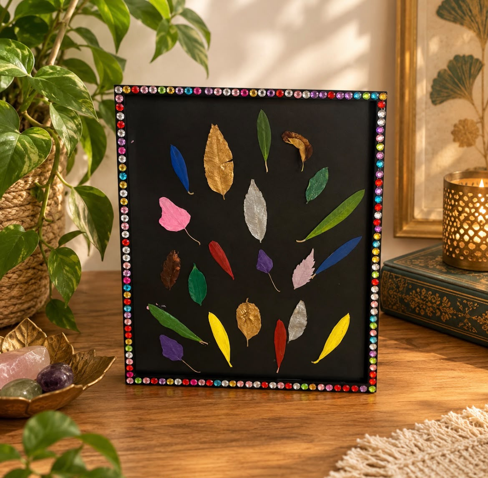
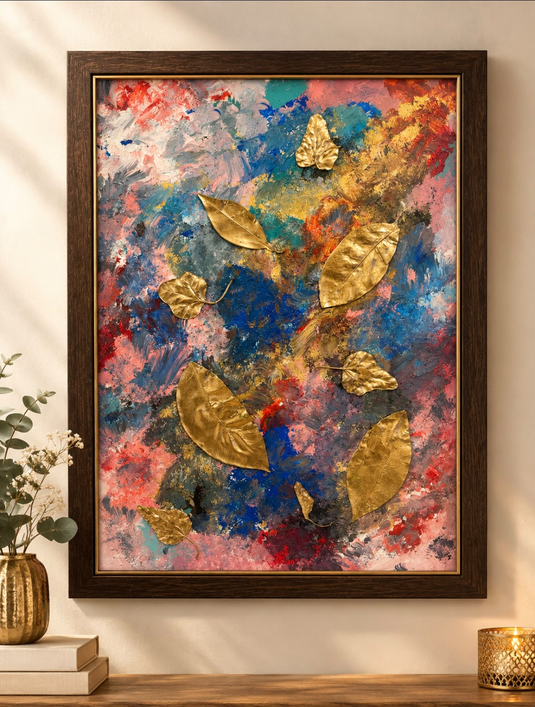
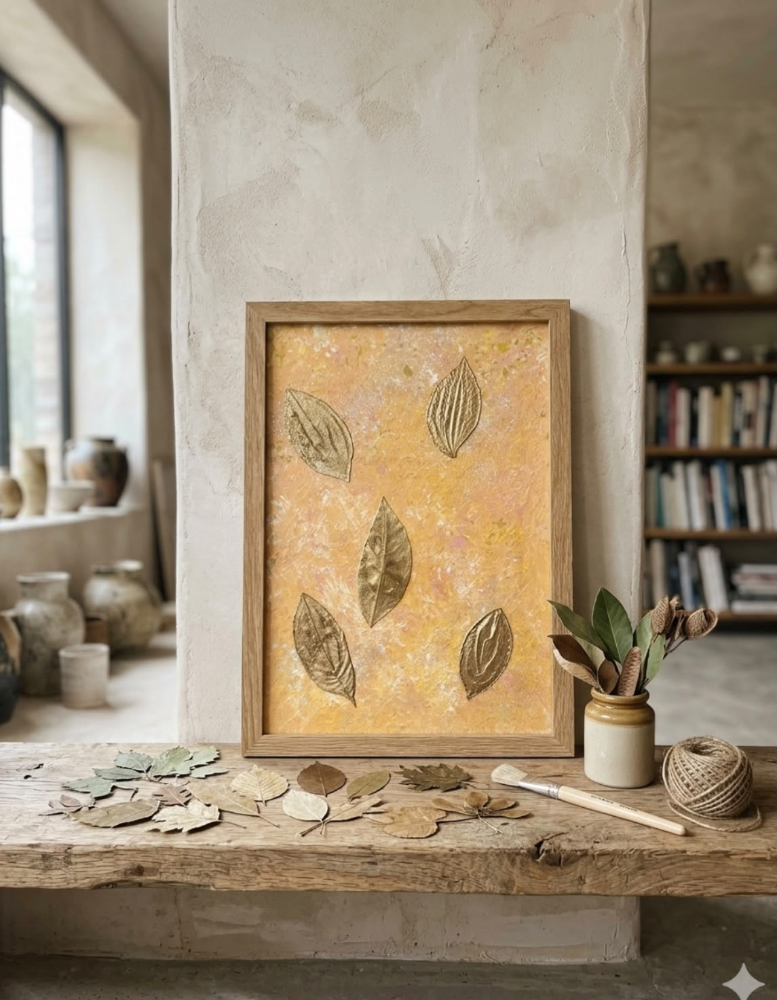
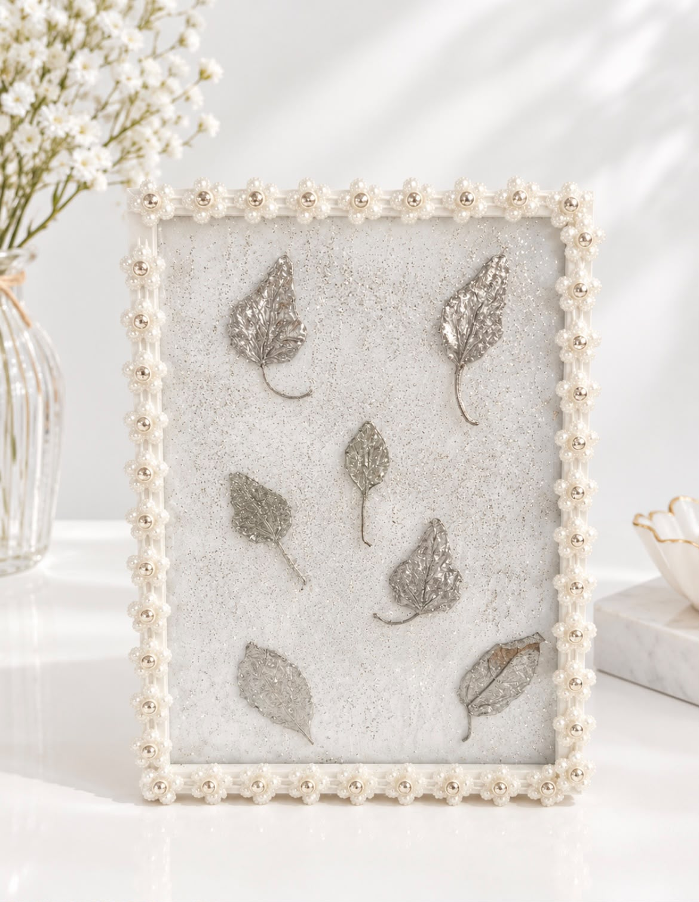

החזון
שמי ירדנה, בת 32. עברתי מתל אביב לפרדס חנה כרכור לפני חודש, עם חזון לעשות סדנאות לילדים והורים בעלים יבשים. הרעיון התחיל מאהבה טהורה ואמיתית לכל הצומח והרצון להחיות עלים שנשרו מהעץ וכך להחזיר אהבה לטבע ולשמר אותו.
הרעיון העיקרי הוא ליצור חיבור בין האדם לטבע. הסדנאות מפתחות את האהבה לטבע, ליצירתיות ולביטוי העצמי, עוזרות בפריקת רגשות ואנרגיה ומטעינות אותנו באנרגיה חיובית.
כמו כל עבודת אמנות, הילד והמבוגר מביאים את עצמם לידי ביטוי, מכניסים כוונות ליצירה ואת האנרגיה שהיו רוצים שתלווה אותם בתהליך. בתהליך מדהים בשתי מפגשים אני מזמינה אתכם, הורים וילדים, לחוויה מעצימה ומחזקת שתחבר אתכם קודם כל לעצמכם, לילדיכם ולטבע.
גלריה




יצירה בהזמנה אישית
כל יצירה נעשית בעבודת יד במיוחד עבורכם, לפי מה שאתם אוהבים. בחרו רקע, צבע עלים ומספר עלים, גררו את העלים למקום שמרגיש נכון, וקבלו תחושה ראשונה של המראה.